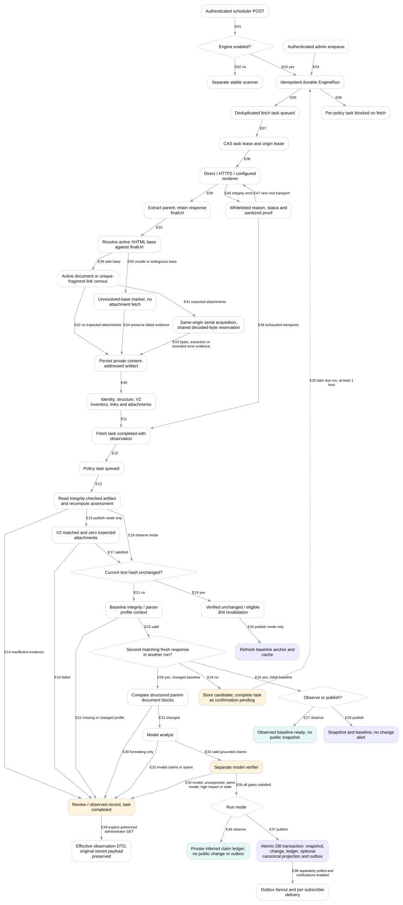
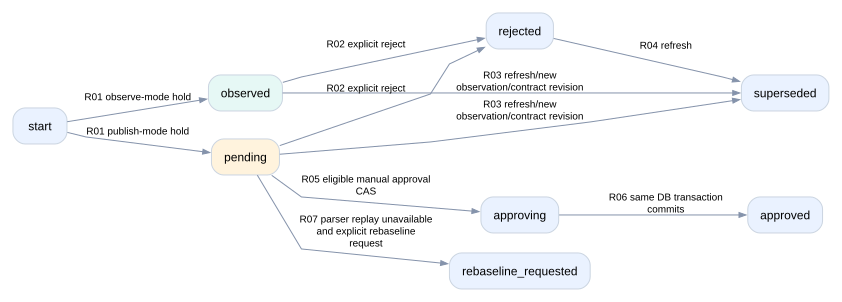
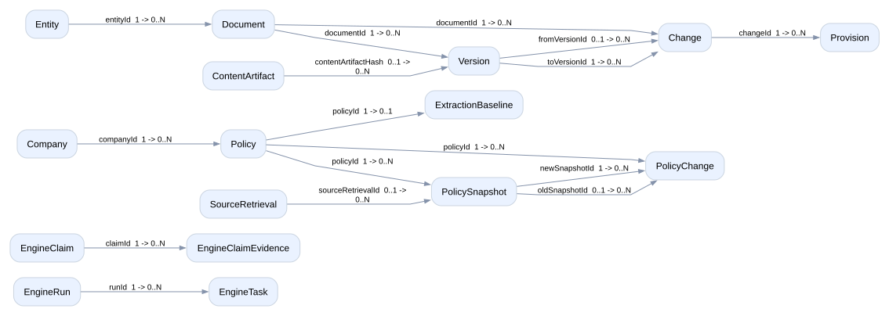

Audit di ricerca · 22 novembre 2026
Atlante di ricerca del workflow PolicyWatcher
Segui una policy dall’acquisizione alla revisione delle evidenze e alla decisione di pubblicazione. Sette diagrammi tracciati sul codice descrivono il candidato, con riscontri corretti e limiti di qualifica.
3eabf9d8b420efb13debfcd8b6e378e81a2c4c61Apri l’atlante interattivo originale — Italiano
L’originale interattivo completo è in italiano. I sette diagrammi dettagliati qui sotto conservano le etichette inglesi revisionate; sono inclusi sorgenti modificabili e ricevute.
Panoramica originale — Italiano
La panoramica compatta mantiene le etichette italiane originali. È uno schema esplicativo, non un grafico di prestazioni misurate.


Sette diagrammi
1. Dalla fonte alla decisione
Richiesta autorizzata, lavoro persistente, acquisizione, controlli delle prove e decisione privata o pubblicabile. Le condizioni sono capacità del codice: nessun nuovo motore è attivato online.


2. Stati del lavoro
Stato del task, fase di lavorazione ed esito sono distinti. Completato può significare sospeso o in attesa di conferma; non certifica una fonte.

3. Revisione e rebaseline
La revisione conserva le prove. Approvazione e richiesta di rebaseline richiedono lo stesso gate pubblicabile; la seconda richiede ancora due catture fresche.


4. Eventi e notifiche
Creazione dell’evento e invio sono separati. Fanout idempotente nel DB; consegna SMTP almeno una volta, con ricontrollo di consenso e preferenze.

5. Sequenza e confini atomici
Rete e modelli operano fuori dalla transazione di pubblicazione. Snapshot, change e claim si salvano insieme; proiezione canonica (se dual-write attivo) ed evento outbox sono opzionali.

6. Relazioni dichiarate nello schema
Vista selettiva delle relazioni dichiarate in Prisma. Non è una verifica dei vincoli del database online; i semplici riferimenti Id restano distinti dalle foreign key.


7. Riferimenti applicativi delle evidenze
Riferimenti scalari o nei payload JSON collegano task, artefatti, contratti, revisioni, claim e outbox. Sono gestiti dall’applicazione e distinti dalle FK.

28 gate di verifica
Le condizioni sotto conservano la formulazione inglese verificata nel modello sorgente. Descrivono controlli implementati, non una certificazione o lo stato attuale della produzione.
| Gate | Percorso | Condizione e limite | Riferimento al codice |
|---|---|---|---|
| Entry authorization | scheduler / admin | valid Bearer or admin-role session; hosted scheduler refused | `api/cron/check-all/route.ts:1581-1593`; `api/admin/engine/route.ts:16-20,63-77` |
| Hosted Preview isolation | enqueue / worker | preview/compare channel, observe, silent, limit ≤50; exact implementation context | `store.ts:34-46`; `pipeline.ts:304-308`; `scanChannels.ts:87-100` |
| Pause / publication flags | enqueue, claim, manual approval | Process-start flags with no live setter: checked at entry/claim and manual approval; hosted fenced writes reassert context and leader lease. Not an instantaneous global kill switch. | src/lib/engine/store.ts:40,151-155,198-217; src/lib/engine/pipeline.ts:304-308,386-388,415-417; src/lib/engine/hostedWorker.ts:65-69,94-103 |
| Stable/Preview exclusion | enqueue | when experimental channels are enabled, stable active lease blocks Engine run and vice versa | `store.ts:63-66`; `api/cron/check-all/route.ts:125-129` |
| Durable lease fencing | claim / writes | CAS token, generation, unexpired task lease; hosted leader asserted in same DB transaction | `store.ts:163-185,198-223`; `hostedWorker.ts:91-116` |
| Origin pacing | fetch | origin cooldown and origin lease; serial same-origin attachment requests within held fetch lease, with one reservation budget shared by all root fallbacks | `store.ts:156-177,253-255`; `acquisition.ts:348-394` |
| Contract identity | acquisition | exact source URL and language; required title/headings/terminal/size bounds | `acquisition.ts:238-239`; `document.ts:131-149` |
| Transport / drift | retrieval | transport helper acceptance, no source drift; 429/503 backoff; configured renderer only | `acquisition.ts:252-284` |
| Conditional 304 | unchanged only | cached matching baseline/profile, direct/exact URL, cache eligibility; no attachments | `acquisition.ts:240-282`; `pipeline.ts:158-173` |
| Private artifact integrity | artifact read | digest(bodyJson)=ID and byteCount matches; max12 MB on write | `store.ts:234-245` |
| V2 reference coverage | capture and publish | source/language/group counts/order; independently declared V2 elements/link census; candidate ID not reference ID | `coverage.ts:171-204,272-292` |
| Active base and document location | link census / attachment planning | one active XHTML base resolved against actual response finalUrl, otherwise default finalUrl; unsafe or ambiguous base holds without fetching attachments; inert template bases/anchors excluded | `acquisition.ts:216,223,288,315-345` |
| Failure diagnostics | root/attachment transport | whitelisted codes, integer status 0–599, enum/length-validated proof rebuilt without extra properties or raw exception text | `acquisition.ts:258-260,386-424` |
| Reservation budget | all root fallbacks in one acquire | reserve ≤1 MB before request from 2 MB total, retain failed reservations, refund successful unused allowance, reuse request promises; this bounds admitted decoded output, not total wire traffic | `acquisition.ts:249-251,348-394`; `scraper.ts:601-615,750-751,822` |
| Terminal review readability | authenticated admin GET / UI | Direct payload or checkpoint observation selected into separate DTO; same timestamp/source/HTTP rendered, original stored payload unchanged | src/app/api/admin/engine/route.ts:26-41; src/app/admin/engine/page.tsx:15-16,120,180-183 |
| Reference provenance limit | all coverage | referenceOriginVerified=false and sourceCompletenessQualified=false even on match | `coverage.ts:176,275-276` |
| Attachment capture | observe only | exact links/status/final URL/media; complete origin framing; original entity bytes and reviewed extraction; shared 2 MB decoded-output reservation per acquire, ≤1 MB per file, at most 4 manifest entries; failed reads retain reservation, successful small reads refund unused allowance; in-run promises reused; no redirect targets | `acquisition.ts:348-394`; `coverage.ts:294-317` |
| Attachment publication hold | all publish / approval paths | expectedAttachments must equal zero regardless of a matching inventory | `coverage.ts:199-204`; `pipeline.ts:36-38,153-155,268-269,345-347,398-400,427-428,457-458` |
| Current context | authoritative write | current policy baseline/scope, contract hash, extractor profile and CAS lock unchanged | `pipeline.ts:54-72` |
| Confirmation | initial/changed baseline | fresh response, same hash/profile, distinct run, 1 hour≤spacing≤7 days | `pipeline.ts:173,215-235`; constants `store.ts:12-13` |
| Parser-profile replay | changed text / old profile | retained old input hash valid, re-extract and require explicit baseline review; unsafe replay requires new confirmed rebaseline | `pipeline.ts:174-190,386-412,452-484` |
| Claim grounding | analyze and commit | schema, exact UTF-16 spans, old/new support, complete delta coverage and table context | `claims.ts:27-87`; `pipeline.ts:327-343` |
| Verifier independence | commit / approval | structurally complete supported verdicts; distinct resolved model identities; correlated model errors still possible | `claims.ts:90-113`; `pipeline.ts:339-343,429-432` |
| High-impact / freshness | commit / review | sensitive/high impact needs human review; candidate evidence ≤48 hours | `claims.ts:83-86`; `pipeline.ts:341-343,429-432` |
| Manual approval scope | review | only impact-only or explicit parser/formatting review; missing hard evidence cannot be waived; current context rechecked | `pipeline.ts:415-484` |
| Atomic publication | commit / eligible manual approve | baseline+snapshot+change+claims+optional outbox in one DB transaction; canonical projection participates in the same transaction only when dual-write is enabled, otherwise helper returns null | src/lib/engine/pipeline.ts:268-295,348-359,433-449; src/lib/documentEvidenceSync.ts:50-54,400-408,485-491 |
| Notification eligibility | separate outbox | notifications flag, public published change; confirmed active INSTANT subscriber and preferences rechecked at send | `outbox.ts:10-11,25-33,46-58` |
| Notification retries | separate outbox | leased CAS, max5 attempts, stable Message-ID; DB fanout dedup, no exactly-once SMTP guarantee | `outbox.ts:13-23,39-41,49-62` |
Audit ed evidenze scaricabili
I conteggi riguardano test controllati, non policy acquisite. I pareri dei modelli sono stati confrontati con codice e controprove; i modelli non hanno eseguito i test.
- 1 P1 e 4 P2 corretti
- 1.865 test superati; 14 saltati
- 5 controprove fallite come atteso
- 4 chiamate cloud gratuite: costo verificato 0 USD
- Codice e prove offline controllate; nessun pentest
I rapporti di supporto originali sono in italiano o nella loro lingua sorgente: sono etichettati, non presentati come traduzioni.
Lo ZIP include una sola copia di documentazione ed evidenze, senza incorporare ricorsivamente sé stesso. Il link allo ZIP è disponibile nella cartella ospitata; le copie estratte possono usare tutti i singoli asset.
Leggere i confini
L’indipendenza del riferimento resta dichiarata dal revisore. Le policy con allegati restano in osservazione anche se l’inventario corrisponde. Completezza generale delle fonti, analisi semantica dei soli allegati e 500 completamenti giornalieri dell’intera pipeline restano da qualificare. La proiezione canonica è opzionale con dual-write attivo e partecipa alla stessa transazione. La consegna SMTP non è esattamente una volta.